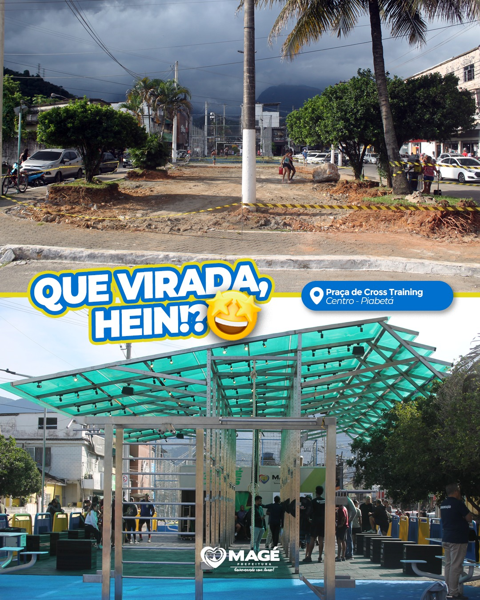

Sobre a Praça de Cross Training
A nova Praça de Cross Training, no Centro de Piabetá, é um novo espaço lugar pensado para estimular hábitos saudáveis, promover o bem-estar e fortalecer a comunidade. Agora tem estrutura de ponta para treinar ao ar livre, com conforto e segurança!
🏋️♂️A primeira praça de Cross Training do estado do Rio de Janeiro foi inaugurada e está disponível para vocês!
O box de Crossfit estará funcionando de segunda a sábado.
Corre que agora é hora de movimentar o corpo e cuidar da mente 💪🏽